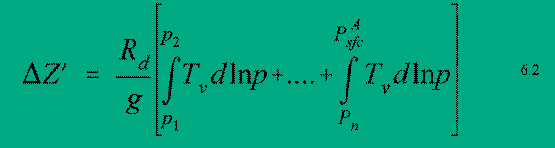

PIRCS Boundary Conditions Development
Description and documentation of procedures used
in its production
Last revised Sept 30, 1997
INDEX
1 - PIRCS DOMAINS
There are three domains for which the data are
available:
- domain (i)
- A latitude-longitude grid that includes
a limited domain of 101(E-W) x 51(N-S)
grid points surrounded by
an extended (by 10 grid points) "forcing frame."
The borders of this grid were chosen so as to make its coverage similar
to domain (ii). The SW corner is at (25 N, 125 W) and the NE corner is at
(50 N, 75 W). The grid has
a central latitude of 37.5 N, a central longitude of 100 W,
and a grid spacing of 0.5 degrees. This configuration is
depicted in Figure 2.1.
An extended (by 10 grid points) "forcing frame" surrounds
grid points spaced regularly at 0.5 degrees.
The orientation of the inner domain is:
Central point (LAT=26, LON= 51) (37.5 N, 100.0 W)
Lower left corner (LAT= 1, LON= 1) (25.0 N, 125.0 W)
Upper right corner (LAT=51, LON=101) (50.0 N, 75.0 W)
- domain (ii)
- A grid based on a polar stereographic projection that includes
a limited domain of 81(E-W) x 55(N-S) grid points surrounded by
an extended (by 10 grid points) "forcing frame." This limited-area
domain covers much of North America and it is defined by a
polar stereographic grid with
a central latitude of 37.5 N, a central longitude of 100 W,
and a grid spacing of 60 km. This configuration is
depicted in Figure 2.2.
The orientation of the inner domain is:
Central point (X_28, Y_41) (37.50 N, 100.00 W)
Lower left corner (X_1 , Y_1) (23.07 N, 117.79 W)
Upper right corner (X_55, Y_81) (45.41 N, 70.50 W).
- domain (iii)
- A grid based on a Lambert conformal projection true at 30 N and 60 N
that includes a limited domain of 101(E-W) x 75(N-S) grid points surrounded by
an extended (by 10 grid points) "forcing frame." This limited-area domain covers
much of North America and it is defined by a Lambert grid with a central
longitude of 100 W, and a grid spacing of 52 km. The orientation of the inner
domain is:
Central point (X_28, Y_41) (37.50 N, 100.00 W)
Lower left corner (X_1 , Y_1) (23.07 N, 117.79 W)
Upper right corner (X_55, Y_81) (45.41 N, 70.50 W).
In order to create the dataset for domain(ii) and (iii), a domain
that encompassed (ii) and (iii) and which was a super-set of
domain (i) was used together with bilinear interpolation.
Note that for these domains, the forcing frame is extended by 10 grid
points in each direction. Thus for:
- domain (i), the forcing frame plus
interior simulation domain is a 121(E-W) x 71(N-S)
grid with SW corner at (20 N, 130 W), and a NE corner at (55 N, 70 W)
- domain (ii), the forcing frame
plus the interior simulation domain is a 101(E-W) x 75 (N-S) grid
with the same center point and grid spacing as the inner domain.
- domain (iii), the forcing frame plus interior simulation domain is a
121(E-W) x 95(N-S) grid with the same center point and grid spacing as the inner
domain.
Files are provided which provide the latitude/longitude coordinate of each
I,J point for domains (ii) and (iii).
The data are provided at all grid points in the forcing frame and interior
simulation domain, and are available every 6 hours of a simulation period. After
the initial time, users are requested to use only data in the forcing frame to
drive their models, as agreed upon at PIRCS
Workshop I.
2 - NCEP REANALYSIS
DATASET
The PIRCS dataset is derived from the NCEP
Reanalysis Project dataset
(Kalnay, 1996).
The data for 1988 were obtained from the Data Support Service (DSS) at the
National Center for Atmospheric
Research (NCAR). Information about the NCEP Reanalysis Project
dataset appears at the URL
ftp://ncardata.ucar.edu/datasets/ds090.0 .
A brief description of the NCEP spectral model and assimilation procedures
used to create the Reanalysis dataset are described in Kalnay et al. (1996).
PIRCS used the 'grbsanl' dataset (a subset of the NCEP Reanalysis dataset).
For this subset, the data were on
a T62 gaussian transform grid (192x94 grid points)
at 28 sigma levels ranging from sigma = 0.00273 to sigma = 0.9985.
The longitudinal spacing for the gaussian grid was 1.875 degrees and
the gaussian latitudes, as well as the sigma levels, can be obtained from the
ds090.0 website.
The grbsanl dataset was distributed on 8 mm exabyte tapes,
which are labeled as follows:
Vol S26018 for January-June, 1988,
Vol S26019 for July-December,1988,
Vol S26006 for January-June, 1993,
Vol S26007 for July-December,1993.
Inventory sheets for these tapes are attached; see section 8
for instructions regarding extraction of the files from the tape.
Once the files are extracted, they have to be 'degribbed' before
processing. The degribbing code is on pv14b1.vincent.iastate.edu in
/local/users/rwturner/GRIBalpha, and is available, upon request,
by anonymous
ftp from this machine. Instructions on file retrieval from anonymous
ftp sites are also given in section 8. (Throughout this document references
are made to files at /local/users/rwturner. These are intended for
internal use at Iowa State, but most can be made available upon request).
A URL where information about GRIB messages can be obtained is
ftp://nic.fb4.noaa.gov/pub/nws/nmc/docs .
To degrib (or unpack) the data for each time period, an inventory of the
PDS's (product definition sections) for each field you want
unpacked has to be created. You can do this by formatting the
unpkgrb1.dat file as follows, assuming the time period is 12 UTC
2 July 1988, and the grbsanl file is stored in the directory
/PIRCS/NCEPgrbsanl
90000/PIRCS/NCEPgrbsanl
test1.dat
FFFFFFFF 00000000 00000000 00000000 00000000 00000000 00000000 0
and executing the command
unpkgrb1.x > inventory
The inventory file will contain PDS's for 172 fields of different
variables (fields are horizontal slices along constant levels).
Stackpole (1994) details the WMO format of the GRIB
(edition 1) messages, and this can be consulted to decode the PDS's
to determine which GRIB records need to be decoded. For PIRCS purposes the
the required fields were T, q, u, and v at all 28 sigma levels
as well as surface pressure and surface geopotential. Once the needed
PDS's are determined, a new unpkgrb1.dat file has to be created
- in which all the necessary PDS's are included. The
format of this file is as follows:
10000/PIRCS/NCEPgrbsanl
test1.dat
00001C02 0750FF80 0B6B26DE 5807020C 00010000 0A000000 14000001 0
00001C02 0750FF80 0B6B265D 5807020C 00010000 0A000000 14000001 0
..................
Var Sig Date
..................
00001C02 0750FF80 01010000 5807020C 00010000 0A000000 14008001 0
00001C02 0750FF80 07010000 5807020C 00010000 0A000000 14000000 0
FFFFFFFF 00000000 00000000 00000000 00000000 00000000 00000000 0
It isn't necessary to create new inventory files for all time periods
if you edit the date octet as appropriate in the 2nd unpkgrb1.dat
file listed above (i.e., the one with all the needed PDS's
already listed). Be aware the record is in hexadecimal
so 88070212 is 5807020C. Some useful hexadecimal-to-decimal
equivalents are:
00H=00D, 01H=01D, 02H=02D, 03H=03D, 04H=04D, 05H=05D, 06H=06D, 07H=07D,
08H=08D, 09H=09D, 0AH=10D, 0BH=11D, 0CH=12D, 0DH=13D, 0EH=14D, 0FH=15D,
10H=16D, 11H=17D, 12H=18D, 13H=19D, 14H=20D, 15H=21D, 16H=22D, 17H=23D,
18H=24D, 19H=25D, 1AH=26D, 1BH=27D, 1CH=28D, 1DH=29D, 1EH=30D, 1FH=31D,
20H=32D, 58H=88D, and 5DH=93D.
To create the output file test1.dat containing all the required fields,
simply execute the command
unpkgrb1.x
The file test1.dat is then used for input by the routines
that create the PIRCS dataset. Note, the programs in
/local/users/rwturner/ncargraphics/global.conpack can be used
to plot the degribbed reanalysis data.
3 - PREPARATION OF PIRCS
DATASET
a) Horizontal Interpolation
Assuming the NCEP reanalysis data have been unpacked correctly for all
28 sigma levels, they are then converted from the T62 Gaussian Grid to
spectral coefficients. After the spectral coefficients have been computed
the data are converted back to the PIRCS regularly spaced grids, domain (i)
grid and sup-(iii), where sup-(iii) is a super set of domain (iii) that
encompasses domain (ii). A bilinear interpolation [see Manning and Haagenson
(1993) for details] is used to interpolate the data from sup-(iii) to domain
(ii). Note, since the dimensions of domain (i) and (iii) are different,
two slightly different sets of codes are maintained in two directories
(/local/users/rwturner/gsm and /local/users/rwturner/gsm.hi).
These codes
are adapted from a global spectral model (GSM) that has been documented in
Bourke (1974) and Nehrkorn and Hoffman (1985).
The file containing the Fortran code (there are many subroutines in
this file) in which the conversion to and from the spectral coefficients is
done
is called gtend.f. Given the structure of the gtend.f routines,
and a
thrashing problem (swap space problems due to huge size of data
arrays), it was more convenient to perform the vertical interpolations within
the subroutine laloop. The vertical interpolation procedures are
described in the next section.
b) Vertical Interpolation and Extrapolation
Vertical interpolation from the 28 sigma levels to the 42 regularly
spaced PIRCS pressure levels (every 25 mb from 25 mb to 1050 mb) is done
within the laloop subroutine, and is based on a linear-in-ln p interpolation.
The code for this was adapted from the sig2prs (sigma to pressure)
subroutine of the INTERP which is an MM5 preprocessing program. This was
done for all variables, except for specific humidity, q, which was first
converted to relative humidity (RH). RH was then interpolated as for
the other variables, except it was subject to the constraint that 0
< RH < 97%. Note, in computing RH, saturated vapor pressures were computed
using a look-up tabular method used at NCEP.
For PIRCS pressure levels that were below the analysis surface
(i.e., for pressure levels greater than the analysis p_sfc),
extrapolation of the variables had to be done. The wind components u and v
were set equal to u(sigma=28), and v(sigma=28) respectively. Temperature, T,
was extrapolated
along the moist adiabat that intersected T(sigma=28), and RH was extrapolated
subject to the constraint that q was constant and equal to q(sigma=28).
Reasons for the
adopting the extrapolation procedures described above are
elaborated upon in section 6. Once T and RH were known for all levels,
q was calculated. Figures
4.1a (0.0176 MB),
4.1b (0.0175 MB),
4.1c (0.0175 MB), and
4.1d (0.0172 MB),
show some initial NCEP reanalysis
soundings over the PIRCS domain, and the resultant interpolated/extrapolated
soundings. Note, there is some loss of information within the
boundary layer and some smoothing of the profiles.
4 - COMPUTATION OF
GEOPOTENTIAL
Some participants have requested that
geopotential data be provided every
50 mb as part of the data-set. These data will not be distributed with the
PIRCS data set, but will be available upon request. The geopotential was
computed as follows: the surface geopotential (which is also
the analysis topography) was part of the NCEP reanalysis data-set.
Geopotential heights were computed at each of the 28 levels through integration
of the hypsometric equation, i.e.,
where "T_v bar" is the average (in ln p) virtual temperature of the k+1 -- k layer.
Note; T_v = T (1 + 0.61q), and T and q are known at the sigma levels, and p_k = sigma*p_sfc,
where K = 1,..,28 with sigma(1) = 0.0027 and sigma(28) = 0.9985. Note for k=28,
geopotential was computed as follows,

In order to compute T_v in the surface to sigma=28 layer, the surface temperature and
specific humidity have to be estimated, q is set to the value at sigma=28 and
T is linearly interpolated in ln p between the pressure level at sigma=28
and the PIRCS pressure level immediately below the surface.
A linear in ln p interpolation is then done to get at the required
pressure levels
(i.e., every 25 mb from 25 mb to 1050 mb) above the surface. To get the geopotential at
pressure levels below the surface,
downward integration of the hypsometric equation is done using the values (previously extrapolated
to the pressure levels) of T and q. Finally, after
geopotential has been computed
everywhere, some horizontal
smoothing of the extrapolated values is done.
Plots of the 850 mb and 1000 mb
geopotential heights for 00 UTC 1 July 1988 are provided in Figures
5.1 (0.0170 MB), and
5.2 (0.0143 MB).
When the Shuell method (an NCEP technique) was used to extrapolate
temperatures a diurnal bias over the high
terrain was evident (in regions of high terrain, heights below the surface were too large
when a nocturnal inversion was present)
5 - PROCEDURE FOR COMPUTING
SURFACE AND MEAN SEA LEVEL PRESSURE
Surface pressure (Analysis p_sfc) will be
distributed as part of the PIRCS analysis data set.
Surface pressure was distributed as part of the NCEP reanalysis dataset, and it was fit to the PIRCS
domains (i.e., (i), (ii), and (iii)) using the procedures described previously in section 4.a.
However, since most PIRCS participants will have their own model topography (or model surface
geopotential), which will be more detailed
than the analysis topography (i.e., analysis surface geopotential - which is provided by PIRCS),
a method for computing a model's surface pressure (Model p_sfc) is needed.
Figure 6.1: Schematic showing DEL Z.
Participants are urged to adopt the procedure outlined below for the purposes of the
intercomparison in order to eliminate unnecessary sources of variation among the models. Code
for the procedure is included in the distributed dataset (part of indat_gen.f).
If anyone notices a problem with this
method or can suggest improvements, please contact us.
The procedure is as follows:
Letting DEL Z = Model surface geopotential - Analysis surface geopotential (as in Fig. 6.1)
and by use of the hypsometric equatioa,n an expression for
Model p_sfc can be obtained as:

where Del Z' is given by

Here T_v can be replaced with an average virtual temperature for each layer (as was done in the
geopotential calculation). Note, p_k are the PIRCS pressure levels that lie within the interval
[Model p_sfc, Analysis p_sfc] and an initial guess for the Model's
p_sfc has to be made, so that p_1,...,p_n can be determined and an estimate of the average virtual
temperature in the Model p_sfc - p_1 layer can be made. The initial guess for Model p_sfc is
assumed to be (Analysis p_sfc-(Del Z/9)).
A similar method is used to compute mean sea level pressure (p_msl). All that is required is
that the Model surface geopotential = 0, so DEL Z= - Analysis Surface geopotential and p_1 has to be
replaced by 1013.25 in Eq. 6.2. Sample
calculations were carried out for domain (ii) with a terrain dataset from MM5. Plots of Model p_sfc
and p_msl are for 00 UTC 1 July 1988 are provided in Figures
6.2 (0.0181 MB), and
6.3 (0.0146 MB).
Note, for the MM5 terrain
dataset, the magnitude of DEL Z was as large as 800 m over the high terrain of the Rockies. For the
forcing frame, DEL Z became large over the southern Mexico mountain ranges and over the
Canadian Rockies.
( Figure 6.4a(0.0172 MB) shows the analysis topography and
Figure 6.4b (0.0173 MB). shows the MM5 topography.)
Note, that the necessity of removing diurnal biases in psfc_M and p_msl dictated
the extrapolation method for temperature described in section 4b. For
example, attempts to preserve
nocturnal inversions resulted in unrealistically high values of Model p_sfc (or p_msl) when DEL Z was large
and negative (i.e., when the model's topography was well below the analysis topography). This
was the reason for extrapolating temperature down the moist adiabat. The mesoscale models
will develop their own inversions within the interior of the simulation domain, but it may be of
interest to determine the sensitivity of the regional climate simulations to the temperature
extrapolation method; i.e., what problems do we encounter if we rigorously preserve boundary
layer features of the NCEP Reanalysis? Recall, a regional climate simulation does not have the
same constraints as a forecast simulation. For example, contamination by errors in the boundary
conditions that affect the timing of rainfall, but not the overall amounts, may not be as important in
a climate simulation.
6 - SURFACE FIELDS SUCH AS SST
AND SOIL-MOISTURE
Daily SST boundary conditions were created for each of the PIRCS grids,
where a day runs from 00 UTC - 00 UTC. To allow for possibly different
land-sea masks among participating models, we give an SST value for every
grid point on the PIRCS grid (even though we do not expect anyone to use
the "SST" in Nebraska or Nevada!). The PIRCS-supplied land use files
in the boundary conditions datastes can be used to
provide a land/ocean mask (7 = Ocean/Lake, all other numbers = Land) for
those that need it.
The SST are based primarily on SST in the NCEP reanalysis, supplemented by
Supplementary SST were used to fill gaps in the ocean/lake mask of T62
grid
used by the reanalysis. Weekly AVHRR SST were assigned to each day of the
week covered. When there were temporal gaps in the supplemetary SST, we
interpolated linearly in time between known values if the gap was less than
one month. If the gap occurred at the start/end of the PIRCS period and
was less than one month, we assigned all missing days the value of the
first/last value in the time series. Gaps greater than one month were
treated as missing data. Although AVHRR retrievals are available every
18 km, we used AVHRR SST at just four points:
- nothern end of Gulf of California
- eastern end of Lake Erie
- eastern end of Lake Ontario
- western end of Lake Ontario
This restriction was used to keep potentially large numbers of AVHRR
retrievals from dominating the SST analysis. We further required that SST
for PIRCS grids in the Gulf of California use only input data east of Baja
California, whereas SST for PIRCS grids in the nearby Pacific Ocean used
only input data west of Baja, so that the relatively warm Gulf of
California could be distinguished from the cooler Pacific.
SST on the PIRCS grids were computed using a Cressman scheme with 5
iterations. The radius of influence started at 1800 km and was halved on
successive iterations. The large initial radius was chosen so that we
could assign an "SST" to every grid point in the PIRCS domains.
The initial soil-moisture fields are provided in the form of a surface
moisture availabilty (m). This gridded soil moisture data were
obtained from the June 1988 NCEP reanalysis volumetric soil-moisture content
in the uppermost 10 cm layer of the soil.
The algorithm to obtain m from the volumetric soil-moisture content (eta)
is as follows:
where (eta_s) is the volumetric soil moisture at
field capacity and (eta_a) is the volumetric
soil moisture at wilting point.
The soil-moisture
availability fields are in the files named SMAP60k.88060100 and
SMAP0p5.88060100, and the field for PIRCS domain (iii) is shown in
Figure 7.2(0.00833 MB).
NOTE: When participants initialize their model,
they must impose a constant soil moisture profile.
ACKNOWLEDGMENTS
The following individuals are thanked for their
help:
Chi-Fan Shih and Dennis Joseph of the
DSS at NCAR, Masao Kanamitsu at NCEP,
James Caveen and Clement Chouinard (Canada -
COMPARE)
Partial suupport was provided by
the
International
Institute for Theoretical and Applied Physics (IITAP),
by the
Center for Global and Regional Environmental
Research (CGRER) at the University of Iowa,
and by the
Electric Power Research Institute
(EPRI).
REFERENCES
Bourke, W., 1974: A multi-level spectral model. I.
Formulation and hemispheric integrations.
Mon. Wea. Rev. , 102, 687-701.
Brown, J.W., O.B. Brown, and R.H. Evans, 1993: Calibration of Advanced
Very High Resolution Radiometer Infrared Channels: A New Approach to
Nonlinear Correction. Journal of Geophysical Research, 98,
18257-18268.
Brown, O.B., J.W. Brown, and R.H. Evans, 1985: Calibration of Advanced
Very High Resolution Radiometer Infrared Observations. Journal of
Geophysical Research, 90, 11667-11677.
Kalnay, E., M. Kanamitsu, R. Kistler, W. Collins,
D. Deaven, L. Gandin, M. Iredell, S. Saha,
G. White, J. Woollen, Y. Zhu, M. Chelliah,
W. Ebisuzaki, W.Higgins, J. Janowiak, K. C. Mo,
C. Ropelewski, J. Wang, A. Leetmaa, R. Reynolds,
R. Jenne, D. Joseph, 1996:
The NCEP/NCAR 40-Year Reanalysis Project.
Bull. Amer. Meteor. Soc., 76, 437-471.
Giorgi, F., C. S. Brodeur, and G. T. Bates, 1994:
Regional climate change scenarios over the United
States produced with a nested regional model.
J. Climate 7,375-399.
Nehrkorn, T., and R. Hoffman, 1985:
Documentation of the general truncation version of the
global spectral model. AER technical memorandum-1.
Stackpole, J. D., 1994: GRIB (Edition 1)
The WMO format for the storage of weather product
information and the exchange of weather product
messages in gridded binary form. Office note 388.
US Dept. of Commerce, NOAA, NWS, NMC.
Takle, E. S., 1995: Project to Intercompare
Regional Climate Simulations (PIRCS),
Preliminary Workshop, 17 - 18 November, 1994.
Bull. Amer. Meteor. Soc., 75, 1625-1626.
Welch, T. A., 1984: A technique for high
performance data compression.
IEEE Computer, 17,#6, 8-19
MISCELLANEOUS
URL's of related websites.
- NCEP Reanalysis dataset information
- GRIB documentation
Original page created by Richard Turner (rwturner@iastate.edu)
25 June 1996
Return to PIRCS Boundary Conditions page


{kind=link}
{kind=link}
{kind=link}
{kind=link}
{kind=link}
{kind=link}
{kind=link}
{kind=link}
{kind=link}
{kind=link}
{kind=link}